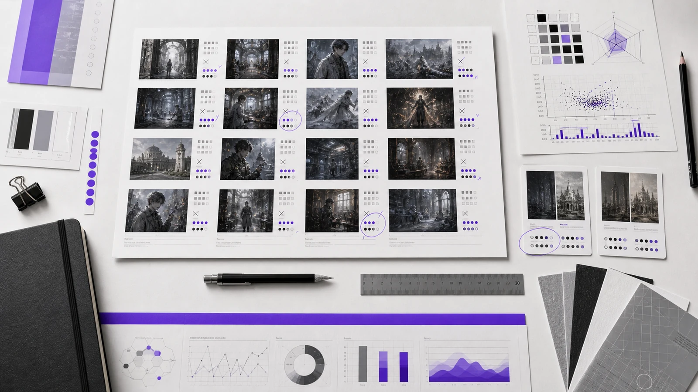
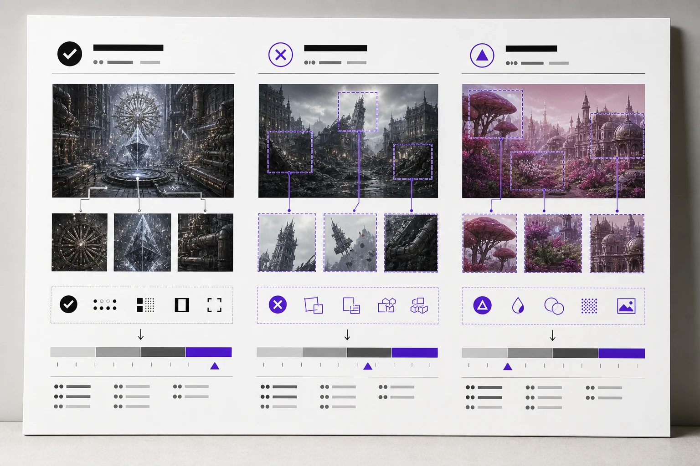
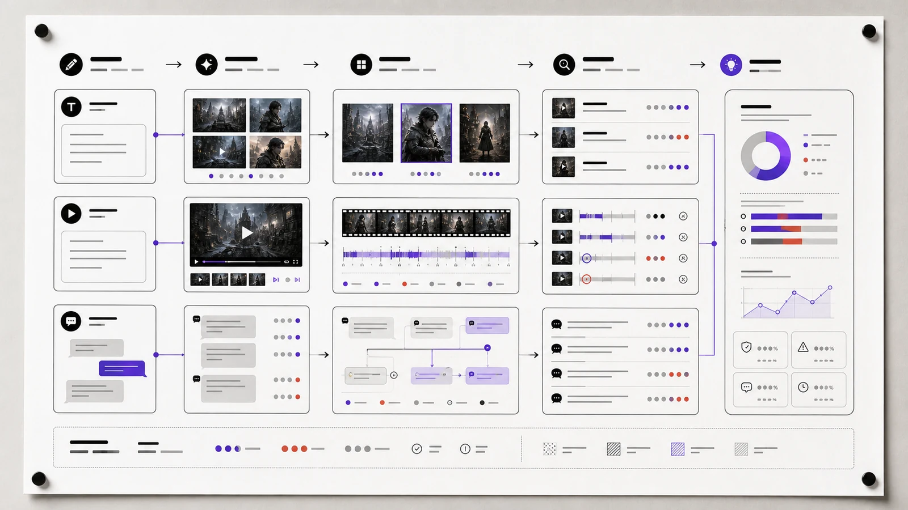

2026 / AI 质量评测方法
Evaluation
Framework
以设计判断为起点，把空间、风格、材质与光影的观察转译为可执行的模型评测标准。这一页整理我如何组织测试样本、比较输出、记录 Badcase，并将结论反馈到提示词与标注规则中。

展示化方法图：将对照样本、评分维度、缺陷标签与输出分布放在同一视野中，便于从“看起来不对”推进到可记录、可复查的判断。
02
Review
Review
Route
评测不是只给结果打分，而是建立从任务目标、样本对照到错误归因和下一轮迭代的闭环。

用同一评价维度比较质量、结构偏差与风格漂移，让差异有可追踪的依据。

图像、视频与对话分别建立检查视角，再在质量结论处汇合成统一反馈。
定义任务
先明确模型要完成什么，以及哪些表现会影响最终使用。
组织样本
以可比较的输入和输出形成测试集，保证观察并非偶然。
归因错误
区分结构、语义、风格、运动与安全问题，记录可复查标签。
反馈迭代
将结论回写到 Prompt、标注规范和工作流，推动下一轮提升。
页面图像为作品集中的方法演示图，用于表达我的评测组织方式；项目经验数据来自个人简历内容，不展示受保密约束的原始任务材料。